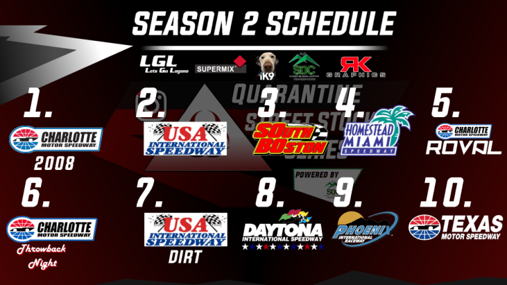

The Instagram Quarantine Street Stock Series
Season 2: New Moon
Season 2 logo designed by Kenneth Bueno
Season 2 of the Instagram Quarantine Street Stock Series was entered with the bar in the sky.
With a new and improved schedule, rules including the choose cone and championship shootout, drivers of the league had high hopes coming fresh off of an exciting Season 1.

Unfortunately, the hype train suffered a derailment not too far into the season with the controversey on the track and mishandling of the league. However, lots of memories were still created as new drivers got their taste of the fun.
Drivers salute ahead of the Season 2 Shootout
The closest finish in IQSSL history happened in race 1. Eli Commerford nearly tasted victory for the first time.
Benjamin White's 450+ vertical launch at Homestead
IQSSL introduced the Stars & Stripes weekend a Daytona, where drivers would showcase their patriotism through their paint schemes.
The dirt race was also moved from Lanier to USA!
South Boston
The third race of Season 2 is commonly credited for the severe dropoff of integrity within IQSSL.
Naturally, the tight walls of South Boston turned the race into a battleground.
After a long night of arging and the suspension of two drivers, JJ and Henry, points from this race were not counted in the schedule, leaving Charlie Baier's only win unregistered forever. One screenshot taken by James Jungemann remains the only piece of media from the race.
The decreasing racing quality, coupled with mishanding from league ownership were both factors in the dropoff of overall league satisfaction from all involved.
The season saw a league-low 3 different points race winners, all three of which one won more than one race
Shane Dimantova dominated early in the season, picking up 3 points race wins in a row.
Winning was routine for Blaze in this league, and nothing stopped him from picking up more in S2

Perhaps the craziest and most heartbreaking finish in IQSSL History. Benjamin White makes a divebomb move in the final corner, swiping a possible win away from Kelan Belsha.
Kohl Williams showed up late in the season, but hit the ground running with 3 race wins in a row. He is credited with winning the final IQSSL sanctioned event and the second closest finish in series history.
Blaze McKinney attempted to defend his championship, but dropped his participation efforts, allowing for Shane DiMantova to make a run for the cup.
After the Pre Race show on KBRN was dropped after the first race at Charlotte, the league's drivers struggled to be satisfied with the results of races.
To little shock to drivers, league owner Charlie Baier announced that the final race at texas would be the last IQSSL event to ever be run, and the league would shift into retirement. He released this statement:
"Following the conclusion of this week's season finale at Texas Motor Speedway, the Instagram Quarantine Street Stock Series will be closing its doors ... I cannot thank you guys enough for what has been a rollercoaster of 2 seasons, but as the old saying goes, all good things must come to an end ... I personally want to thank Kenneth for his efforts to put on the pre race show throughout the first season, ultimately kickstarting KBRN. And most importantly the racers who show up week in and week out with a need for speed and your patience. None of this would have been possible without the great group of people we have. Make this weekend count. It will be our last"
But the weekend came and went in silence. No race was run.
And so, that concluded Season 2 of IQSSL. Shane DiMantova was crowned champion, just 4 points over Charlie Baier, and the league would fall into silence forever.
Final Points Standings:
1. Shane DiMantova: 57pts
2. Charlie Baier: 53pts
3. Blaze McKinney: 47pts
4. Kenneth Bueno: 38pts
5. Kelan Belsha: 35pts
6. Glen Bundren: 31pts
7. Jack D'Andrea: 29pts
8. Eli Commerfords: 27pts
9. Benjamin White: 21pts
10. Kohl Williams: 20pts
11. James Jungemann: 17pts
12. Henry Tabor: 11pts
13. Kealoha Hankins: 6pts
JJ Hill: 3pts
Season 2 Race Winners:
| Shootout |
Charlotte |
USA Speedway |
South Boston |
Homestead |
Homestead Doubleheader |
|
Glen Bundren
|
Blaze McKinney
|
Shane DiMantova
|
Charlie Baier
|
Shane DiMantova
|
Shane DiMantova
|
| Roval |
Charlotte Throwback |
USA Dirt |
Daytona |
Phoenix |
Texas |
|
Blaze McKinney
|
Blaze McKinney
|
Kohl Williams
|
Kohl Williams
|
Kohl Williams
|
Not Run
|